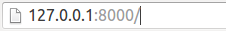

HttpResponse对象
- 在django.http模块中定义了HttpResponse对象的API
- HttpRequest对象由Django自动创建，HttpResponse对象由程序员创建
- 不调用模板，直接返回数据
#coding=utf-8
from django.http import HttpResponse
def index(request):
return HttpResponse('你好')
- 调用模板
from django.http import HttpResponse
from django.template import RequestContext, loader
def index(request):
t1 = loader.get_template('polls/index.html')
context = RequestContext(request, {'h1': 'hello'})
return HttpResponse(t1.render(context))
属性
- content：表示返回的内容，字符串类型
- charset：表示response采用的编码字符集，字符串类型
- status_code：响应的HTTP响应状态码
- content-type：指定输出的MIME类型
方法
- init ：使用页内容实例化HttpResponse对象
- write(content)：以文件的方式写
- flush()：以文件的方式输出缓存区
- set_cookie(key, value='', max_age=None, expires=None)：设置Cookie
- key、value都是字符串类型
- max_age是一个整数，表示在指定秒数后过期
- expires是一个datetime或timedelta对象，会话将在这个指定的日期/时间过期，注意datetime和timedelta值只有在使用PickleSerializer时才可序列化
- max_age与expires二选一
- 如果不指定过期时间，则两个星期后过期
from django.http import HttpResponse
from datetime import *
def index(request):
response = HttpResponse()
if request.COOKIES.has_key('h1'):
response.write('<h1>' + request.COOKIES['h1'] + '</h1>')
response.set_cookie('h1', '你好', 120)
# response.set_cookie('h1', '你好', None, datetime(2016, 10, 31))
return response
- delete_cookie(key)：删除指定的key的Cookie，如果key不存在则什么也不发生
子类HttpResponseRedirect
- 重定向，服务器端跳转
- 构造函数的第一个参数用来指定重定向的地址
在views1.py中
from django.http import HttpResponse,HttpResponseRedirect
def index(request):
return HttpResponseRedirect('js/')
def index2(request,id):
return HttpResponse(id)
在应用的urls.py中增加一个url对象
url(r'^([0-9]+)/$', views1.index2, name='index2'),
- 请求地址栏如图：

- 请求结果的地址栏如图：
- 推荐使用反向解析
from django.core.urlresolvers import reverse
def index(request):
return HttpResponseRedirect(reverse('booktest:index2', args=(1,)))
子类JsonResponse
- 返回json数据，一般用于异步请求
- _init _(data)
- 帮助用户创建JSON编码的响应
- 参数data是字典对象
- JsonResponse的默认Content-Type为application/json
from django.http import JsonResponse
def index2(requeset):
return JsonResponse({'list': 'abc'})
简写函数
render
- render(request, template_name[, context])
- 结合一个给定的模板和一个给定的上下文字典，并返回一个渲染后的HttpResponse对象
- request：该request用于生成response
- template_name：要使用的模板的完整名称
- context：添加到模板上下文的一个字典，视图将在渲染模板之前调用它
from django.shortcuts import render
def index(request):
return render(request, 'booktest/index.html', {'h1': 'hello'})
重定向
- redirect(to)
- 为传递进来的参数返回HttpResponseRedirect
- to推荐使用反向解析
from django.shortcuts import redirect
from django.core.urlresolvers import reverse
def index(request):
return redirect(reverse('booktest:index2'))
得到对象或返回404
- get_object_or_404(klass, args, *kwargs)
- 通过模型管理器或查询集调用get()方法，如果没找到对象，不引发模型的DoesNotExist异常，而是引发Http404异常
- klass：获取对象的模型类、Manager对象或QuerySet对象
- **kwargs：查询的参数，格式应该可以被get()和filter()接受
- 如果找到多个对象将引发MultipleObjectsReturned异常
from django.shortcuts import *
def detail(request, id):
try:
book = get_object_or_404(BookInfo, pk=id)
except BookInfo.MultipleObjectsReturned:
book = None
return render(request, 'booktest/detail.html', {'book': book})
将settings.py中的DEBUG改为False
将请求地址输入2和100查看效果
得到列表或返回404
- get_list_or_404(klass, args, *kwargs)
- klass：获取列表的一个Model、Manager或QuerySet实例
- **kwargs：查寻的参数，格式应该可以被get()和filter()接受
from django.shortcuts import *
def index(request):
# list = get_list_or_404(BookInfo, pk__lt=1)
list = get_list_or_404(BookInfo, pk__lt=6)
return render(request, 'booktest/index.html', {'list': list})
将settings.py中的DEBUG改为False